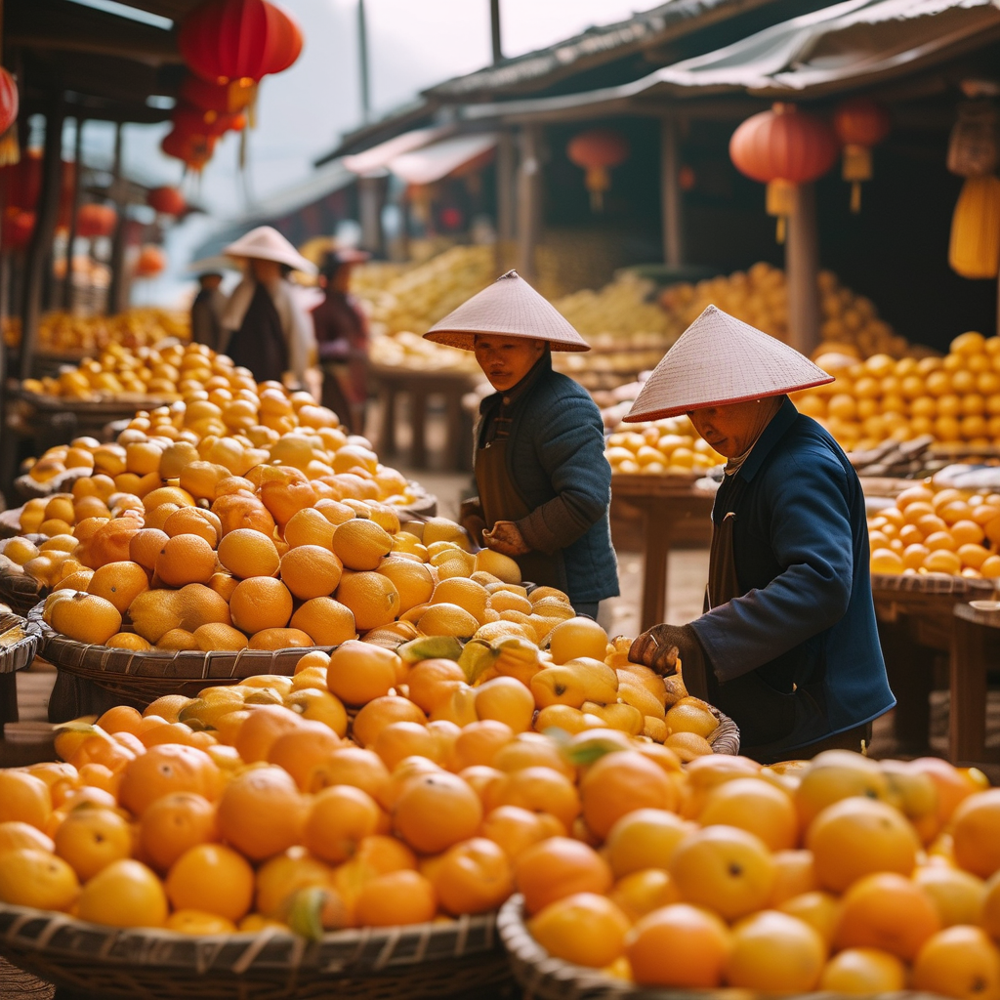
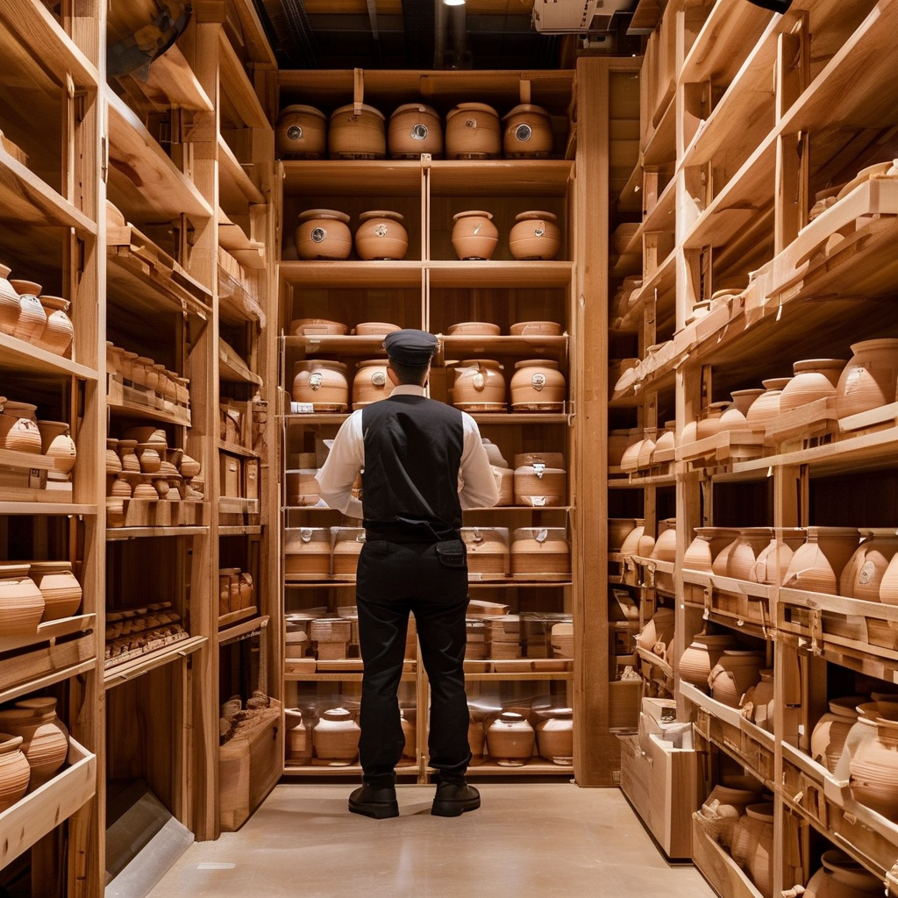

導語
又到一年柑黃時。距離新會陳皮村正式開啟「2026新會陳皮預售季」只剩不到兩週，整個產區從政府、果圍、加工廠到金融機構，都在為這場秋季大會戰做最後的衝刺。今天這份熱點日報，幫你把最近一週陳皮圈最重要的大事一次梳理清楚——無論你是自飲、收藏還是觀望出手，這一輪訊號都不能錯過。
一、9·28預售季成頭號風向標：1000萬斤採購計劃鎖定全年產銷
8月28日，「守標篤實·聚鏈共興」2026年新會陳皮產業協同發展交流會在新會陳皮村現代農業體驗館舉行，會上正式發佈今年鮮果採購計劃——新會陳皮村與6家果圍簽訂意向協議，計劃收購鮮果1000萬斤（約500萬公斤）。其中古井梓富果圍1700畝種植基地，預計達成200萬至250萬斤合作。

果圍負責人黃潮波的話很直接：「今年收購價格穩步回升，提前簽約有效打消產銷顧慮，給了果農定心丸。」 陳皮村副總經理劉樂則同步解讀了《陳皮村新會柑鮮果產銷協同政策》，圍繞鮮果採購、加工入倉優惠、分裝定製、門店平台賦能等多項惠農惠商舉措集中發佈。
這條訊號的份量在於：1000萬斤不是一個小數字，按目前核心產區圈枝柑鮮果收購價5.5至12元一斤計算，這筆訂單貨值過億，意味著今年新會柑的產銷主通道已經提前打通。
預售季定檔：9月28日，2026新會陳皮預售季正式開啟，新會陳皮村將整合供應鏈資源，助力採收季產銷對接。
二、海關＋陳皮村共建全鏈條溯源體系，造假者空間被進一步擠壓
同一場交流會上，新會海關綜合技術服務中心與新會陳皮村達成「新會陳皮溯源體系共建」戰略合作。雙方將覆蓋種植、採收、加工、倉儲、流通全環節，構建「來源可溯、品質可控、信任可依」的監管機制，守護新會陳皮道地品質，擦亮地理標誌金字招牌。
行業普遍估算市面約百分之三十的「高價新會陳皮」是假貨或摻假產品，主要手段是虛標年份、外地柑皮冒充核心產區、染色做舊、硫磺燻製。溯源體系一旦落到每一批次的「數字身份證」，這部分灰色空間會被快速擠壓。對於普通消費者，未來購買時只需認準溯源碼，就能一眼看穿「九塊九包郵三十年老皮」的把戲。
三、「陳皮銀行」金融賦能：建行倉儲質押貸款方案落地
資金問題一直是新會陳皮產業鏈最敏感的環節。柑農要現金流周轉，商家要備貨囤皮，誰來給他們「活水」？這次交流會給出了明確答案：中國建設銀行新會支行發佈「陳皮村標準倉儲陳皮質押貸款優惠方案」——依託陳皮村標準化倉儲體系，將入庫陳皮轉化為可質押資產，真正實現「存貨變活水」。

「以前陳皮躺在倉庫裏只是一堆『皮』，現在它可以是合格的金融抵押物。」 對收藏客來説，這等於多了一層制度背書：標準倉儲裏的陳皮不僅有地理標誌背書，還有銀行願意按公允價值押給你貸款，這本身就是品質的隱性信用評級。
四、產業目標鎖定500億：五邑大學陳皮學院揭牌、莊園經濟崛起
新會陳皮產業的下一個十年目標已經明確：到2030年全產業鏈產值突破500億元。當前全產業鏈年產值已達283億元，連續三年位居中國區域農業產業品牌影響力指數榜首，帶動就業創業超7.8萬人。
第一條是科技化。2026年3月18日，五邑大學陳皮學院正式揭牌，由五邑大學聯合新會區政府、陳皮行業協會共建。學院聚焦陳皮年份鑒定、無損檢測、活性成分提取等關鍵技術難題。
第二條是莊園經濟。新會已認定首批18家新會柑（陳皮）莊園，涵蓋綜合發展、研發加工、生態文旅、科技種植四種類型。麗宮莊園創新推出的「柑菌共生」模式——新會柑樹間作紅松茸，畝產達500公斤——實現了「樹護菌、菌養地」的可持續生態鏈。
五、市場行情：核心產區14年陳皮漲幅可達15至20%
根據行業最新梳理，2026年新會陳皮價格走勢呈現「穩中有升、品質分化」兩大特徵：
- **3年以下新皮**：每斤200至500元，需自行倉儲陳化
- **3年陳（核心產區二紅皮/大紅皮）**：約280至380元一斤
- **5年陳**：約580至780元一斤
- **10年陳**：1200至1800元一斤
- **20年陳精品**：突破每斤數千元
- **30年正宗新會陳皮**：市場零售普遍2萬至8萬元一斤，極品超10萬
短期（2025至2026）核心產區精品陳皮漲幅可達15%至20%；長期看，具備核心產區、道地工藝的精品陳皮價格會持續走高。
常見問題
Q1：1000萬斤採購計劃對農户有什麼直接影響？
提前簽約讓柑農吃了定心丸，不用擔心豐產後銷售不暢，穩定了增收信心，同時便於安排採收計劃。
Q2：陳皮銀行質押貸款適合普通收藏客嗎？
主要服務對像是商家和有一定庫存規模的收藏家，個人消費者建議選擇有溯源保障的正規渠道購買。
Q3：直播間低價陳皮可信嗎？
記住兩條鐵律——價格遠低於市場行情的不可信，無溯源資訊的不可信。真正三十年的陳皮市場零售價普遍在數萬元一斤。
Q4：孕婦和小孩可以吃陳皮嗎？
孕婦和兒童應慎用，特殊體質或正在服藥的人士應先諮詢合資格專業人士，唔好將陳皮當成治療方案。
Q5：9月28日預售季價格走勢如何？
預售季是觀察全年鮮果開盤價的第一個窗口，預計頭茬二紅柑開秤價會比2025年同期上調15%至20%。
熱點標籤：#新會陳皮 #預售季 #溯源體系 #陳皮銀行 #500億產值 相關地區：江門新會、陳皮村、古井、天馬村、茶坑村